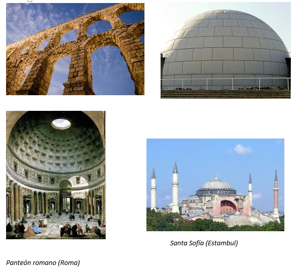

a) Masivas. Grandes bloques de material macizo, sin dejar apenas hueco. Los elementos que las componen trabajan a compresión. Ej: pirámide, un castillo, pedestal de una estatua
b) Abovedadas. Arcos, bóvedas, cúpulas. Sus elementos trabajan a compresión. Su principal finalidad es la de cubrir un espacio, entre dos muros en el caso de las bóvedas o entre 4 o más en el de las cúpulas. Ej: acueducto, iglú, etc.

c) Entramadas. Emparrillado de materiales. Ej: forjado de hormigón, armado, vías del tren, etc).
a.Pilares: Elementos resistentes dispuestos en posición vertical, que soportan el peso de los elementos que se apoyan sobre ellos. Cuando presentan forma cilíndrica se les denomina columnas.
b.Vigas: Elementos colocados normalmente en posición horizontal que soportan la carga de la estructura y la transmiten hacia los pilares.
c.Forjado. Es el suelo y el techo de los edifcios
d) Trianguladas o de barras. Normalmente metálicas o de madera

e) Colgantes. Usan cables de los que cuelgan estructuras. Ej: tirantes de puentes, puentes colgantes, cuerda para hacer puenting, etc)
f) Laminares. En forma de carcasa, láminas, planchas, paneles… Ej: funda rígida de las gafas, carcasa de un ordenador, etc.
g) Neumáticas. Estructuras con aire dentro que adoptan una determinada forma. Ej: un balón de playa, neumático, etc.
h) Geodésicas. Triángulos y polígonos que componen la superficie de una esfera o semiesfera